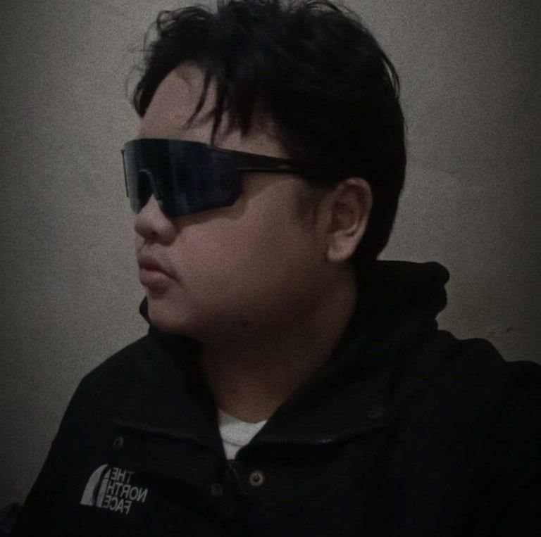

BSIT graduate of Kabankalan Catholic College (2026), based in Negros Occidental, PH. I keep systems running through computer hardware troubleshooting, Windows OS installation and configuration, networking, Linux administration, and Software Asset Management. I'm currently open to IT support, helpdesk, systems administration, and junior IT asset management roles.
I like fixing things properly, not just patching them. Give me a machine that won't boot, a driver conflict, or a network that keeps dropping, and I'll trace it back to the actual cause instead of guessing. That habit carries over into everything I do — including how I run my own setup at home, where I daily-drive Linux Mint, tune performance for gaming, and manage backups and configurations the way I'd want a helpdesk ticket handled: documented, tested, and reversible.
As a Software Asset Manager (SAM), I also built and deployed an internal IT asset management system using Snipe-IT, setting it up on my Linux environment, configuring its database and server, and organizing the system around tracking and managing software and IT assets. This gave me hands-on experience connecting asset management with system administration and maintaining an organized, reliable IT environment.
I'm looking for a role where that same care applies to real users — with patient, clear communication and following through until the issue actually stays fixed.
Capstone project — a records and service management system for barangay-level government offices. Built as front-end developer on the team, focused on the user-facing interface for staff handling resident records and requests.
Freelance front-end build for a solar products company. Team project — my role covered the client-facing interface, built with a modern component-based stack and utility-first styling.